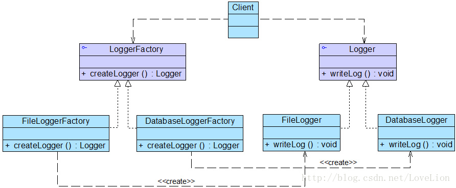
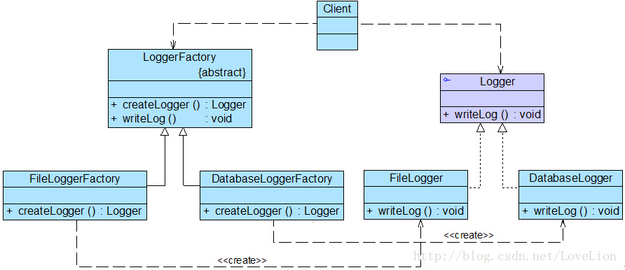

简单工厂模式虽然简单，但存在一个很严重的问题。当系统中需要引入新产品时，由于静态工厂方法通过所传入参数的不同来创建不同的产品，这必定要修改工厂类的源代码，将违背“开闭原则”，如何实现增加新产品而不影响已有代码？工厂方法模式应运而生，本文将介绍第二种工厂模式——工厂方法模式。
1. 日志记录器的设计#
Sunny软件公司欲开发一个系统运行日志记录器(Logger)，该记录器可以通过多种途径保存系统的运行日志，如通过文件记录或数据库记录，用户可以通过修改配置文件灵活地更换日志记录方式。在设计各类日志记录器时，Sunny公司的开发人员发现需要对日志记录器进行一些初始化工作，初始化参数的设置过程较为复杂，而且某些参数的设置有严格的先后次序，否则可能会发生记录失败。如何封装记录器的初始化过程并保证多种记录器切换的灵活性是Sunny公司开发人员面临的一个难题。
1.1 设计要点#
- 需要封装日志记录器的初始化过程，这些初始化工作较为复杂，例如需要初始化其他相关的类，还有可能需要读取配置文件（例如连接数据库或创建文件），导致代码较长，如果将它们都写在构造函数中，会导致构造函数庞大，不利于代码的修改和维护
- 用户可能需要更换日志记录方式，在客户端代码中需要提供一种灵活的方式来选择日志记录器，尽量在不修改源代码的基础上更换或者增加日志记录方式。

用简单工厂模式来做系统设计，LoggerFactory来创建具体的logger，抽象类logger被几个具体的logger类实现，客户端通过调用LoggerFactory来生成具体的logger对象。
//日志记录器工厂
class LoggerFactory {
//静态工厂方法
public static Logger createLogger(String args) {
if(args.equalsIgnoreCase("db")) {
//连接数据库，代码省略
//创建数据库日志记录器对象
Logger logger = new DatabaseLogger();
//初始化数据库日志记录器，代码省略
return logger;
}
else if(args.equalsIgnoreCase("file")) {
//创建日志文件
//创建文件日志记录器对象
Logger logger = new FileLogger();
//初始化文件日志记录器，代码省略
return logger;
}
else {
return null;
}
}
}
通过这种模式，我们将日志记录器的创建和使用分离，客户端只需使用由工厂类创建的日志记录器对象即可。但仍存在一些问题：
- 工厂类过于庞大，包含了大量的if…else…代码，导致维护和测试难度增大
- 系统扩展不灵活，如果增加新类型的日志记录器，必须修改静态工厂方法的业务逻辑，违反了“开闭原则”。
2. 工厂方法模式概述#
简单工厂模式只提供了一个工厂类，该工厂类处于对产品类进行实例化的中心位置，它需要知道每一个产品对象的创建细节，并决定何时实例化哪一个产品类。简单工厂模式最大的缺点是当有新产品要加入到系统中时，必须修改工厂类，需要在其中加入必要的业务逻辑，这违背了“开闭原则”。 此外，在简单工厂模式中，所有的产品都由同一个工厂创建，工厂类职责较重，业务逻辑较为复杂，具体产品与工厂类之间的耦合度高，严重影响了系统的灵活性和扩展性，而工厂方法模式则可以很好地解决这一问题。
2.1 定义#
工厂方法模式不再提供一个统一的工厂类来创建所有的产品对象，而是针对不同的产品提供不同的工厂，系统提供一个与产品等级结构对应的工厂等级结构。
工厂方法模式(Factory Method Pattern)：定义一个用于创建对象的接口，让子类决定将哪一个类实例化。工厂方法模式让一个类的实例化延迟到其子类。工厂方法模式又简称为工厂模式(Factory Pattern)，又可称作虚拟构造器模式(Virtual Constructor Pattern)或多态工厂模式(Polymorphic Factory Pattern)。工厂方法模式是一种类创建型模式。

2.2 组成#
工厂方法模式包含以下几个组成部分：
- Product 抽象产品
它是定义产品的接口，是工厂方法模式所创建对象的超类型，也就是产品对象的公共父类。
- Concrete Product 具体产品
它实现了抽象产品接口，某种类型的具体产品由专门的具体工厂创建，具体工厂和具体产品之间一一对应。
- Factory 抽象工厂
在抽象工厂类中，声明了工厂方法(Factory Method)，用于返回一个产品。抽象工厂是工厂方法模式的核心，所有创建对象的工厂类都必须实现该接口。
- Concrete Factory 具体工厂
它是抽象工厂类的子类，实现了抽象工厂中定义的工厂方法，并可由客户端调用，返回一个具体产品类的实例。
2.3 实现#
抽象工厂，可以使接口，或者是抽象类
interface Factory {
public Product factoryMethod();
}
抽象工厂声明了工厂方法但是并未实现工厂方法，具体产品对象的创建由其子类负责，客户端针对抽象工厂编程，运行时再指定具体工厂类。不同的具体工厂可以创建不同的具体产品。
class ConcreteFactory implements Factory {
public Product factoryMethod() {
return new ConcreteProduct();
}
}
在实际使用时，具体工厂类在实现工厂方法时除了创建具体产品对象之外，还可以负责产品对象的初始化工作以及一些资源和环境配置工作，例如连接数据库、创建文件等。
在客户端代码中，只需关注工厂类即可，不同的具体工厂可以创建不同的产品。
……
Factory factory;
factory = new ConcreteFactory(); //可通过配置文件实现
Product product;
product = factory.factoryMethod();
……
2.4 完整解决方案#

Logger是抽象产品， 其子类FileLogger和DatabaseLogger充当具体产品，LoggerFactory接口充当抽象工厂，其子类FileLoggerFactory和DatabaseLoggerFactory充当具体工厂。
//日志记录器接口：抽象产品
interface Logger {
public void writeLog();
}
//数据库日志记录器：具体产品
class DatabaseLogger implements Logger {
public void writeLog() {
System.out.println("数据库日志记录。");
}
}
//文件日志记录器：具体产品
class FileLogger implements Logger {
public void writeLog() {
System.out.println("文件日志记录。");
}
}
//日志记录器工厂接口：抽象工厂
interface LoggerFactory {
public Logger createLogger();
}
//数据库日志记录器工厂类：具体工厂
class DatabaseLoggerFactory implements LoggerFactory {
public Logger createLogger() {
//连接数据库，代码省略
//创建数据库日志记录器对象
Logger logger = new DatabaseLogger();
//初始化数据库日志记录器，代码省略
return logger;
}
}
//文件日志记录器工厂类：具体工厂
class FileLoggerFactory implements LoggerFactory {
public Logger createLogger() {
//创建文件日志记录器对象
Logger logger = new FileLogger();
//创建文件，代码省略
return logger;
}
}
客户端测试代码：
class Client {
public static void main(String args[]) {
LoggerFactory factory;
Logger logger;
factory = new FileLoggerFactory(); //可引入配置文件实现
logger = factory.createLogger();
logger.writeLog();
}
}
2.5 反射与配置文件#
如何在不修改任何客户端代码的基础上更新或增加新的日志记录方式？
在客户端代码中将不再使用new关键字来创建工厂对象，而是将具体工厂类的类名存储在配置文件（如XML文件）中，通过读取配置文件获取类名字符串，再使用Java的反射机制，根据类名字符串生成对象。在整个实现过程中需要用到两个技术：Java反射机制与配置文件读取。
Java反射机制
是指在程序运行时获取已知名称的类或已有对象的相关信息的一种机制，包括类的方法、属性、父类等信息，还包括实例的创建和实例类型的判断等。在反射中使用最多的类是Class，Class类的实例表示正在运行的Java应用程序中的类和接口，其forName(String className)方法可以返回与带有给定字符串名的类或接口相关联的 Class对象，再通过Class对象的newInstance()方法创建此对象所表示的类的一个新实例，即通过一个类名字符串得到类的实例。
//通过类名生成实例对象并将其返回
Class c=Class.forName("String");
Object obj=c.newInstance();
return obj;
而后使用XML格式的配置文件config.xml用于存储具体日志记录器工厂类类名：
<!— config.xml -->
<?xml version="1.0"?>
<config>
<className>FileLoggerFactory</className>
</config>
然后用一个名为XMLUtil的工具类来获取xml文件定义的类，并且生成实例对象。
//工具类XMLUtil.java
import javax.xml.parsers.*;
import org.w3c.dom.*;
import org.xml.sax.SAXException;
import java.io.*;
public class XMLUtil {
//该方法用于从XML配置文件中提取具体类类名，并返回一个实例对象
public static Object getBean() {
try {
//创建DOM文档对象
DocumentBuilderFactory dFactory = DocumentBuilderFactory.newInstance();
DocumentBuilder builder = dFactory.newDocumentBuilder();
Document doc;
doc = builder.parse(new File("config.xml"));
//获取包含类名的文本节点
NodeList nl = doc.getElementsByTagName("className");
Node classNode=nl.item(0).getFirstChild();
String cName=classNode.getNodeValue();
//通过类名生成实例对象并将其返回
Class c=Class.forName(cName);
Object obj=c.newInstance();
return obj;
}
catch(Exception e) {
e.printStackTrace();
return null;
}
}
}
而后客户端不需要再使用new关键字来创建具体的工厂类了，可以将具体工厂类的类名存储在XML文件中，再通过XMLUtil类的静态工厂方法getBean()进行对象的实例化
class Client {
public static void main(String args[]) {
LoggerFactory factory;
Logger logger;
factory = (LoggerFactory)XMLUtil.getBean(); //getBean()的返回类型为Object，需要进行强制类型转换
logger = factory.createLogger();
logger.writeLog();
}
}
引入了Util和XML配置文件之后，如果要增加新的日志记录方式，只需要：
- 新的日志记录器需要继承抽象日志记录器Logger
- 对应增加一个新的具体日志记录器工厂，继承抽象日志记录器工厂LoggerFactory，并实现其中的工厂方法createLogger()，设置好初始化参数和环境变量，返回具体日志记录器对象；
- 修改配置文件config.xml，将新增的具体日志记录器工厂类的类名字符串替换原有工厂类类名字符串
- 编译新增的具体日志记录器类和具体日志记录器工厂类，运行客户端测试类即可使用新的日志记录方式，而原有类库代码无须做任何修改，完全符合“开闭原则”。
2.6 重载的工厂方法#
发现可以通过多种方式来初始化日志记录器，例如可以为各种日志记录器提供默认实现；还可以为数据库日志记录器提供数据库连接字符串，为文件日志记录器提供文件路径；也可以将参数封装在一个Object类型的对象中，通过Object对象将配置参数传入工厂类。此时，可以提供一组重载的工厂方法，以不同的方式对产品对象进行创建。当然，对于同一个具体工厂而言，无论使用哪个工厂方法，创建的产品类型均要相同。
引入重载方法后，抽象工厂LoggerFactory的代码修改如下：
interface LoggerFactory {
public Logger createLogger();
public Logger createLogger(String args);
public Logger createLogger(Object obj);
}
具体工厂类DatabaseLoggerFactory代码修改如下：
class DatabaseLoggerFactory implements LoggerFactory {
public Logger createLogger() {
//使用默认方式连接数据库，代码省略
Logger logger = new DatabaseLogger();
//初始化数据库日志记录器，代码省略
return logger;
}
public Logger createLogger(String args) {
//使用参数args作为连接字符串来连接数据库，代码省略
Logger logger = new DatabaseLogger();
//初始化数据库日志记录器，代码省略
return logger;
}
public Logger createLogger(Object obj) {
//使用封装在参数obj中的连接字符串来连接数据库，代码省略
Logger logger = new DatabaseLogger();
//使用封装在参数obj中的数据来初始化数据库日志记录器，代码省略
return logger;
}
}
//其他具体工厂类代码省略
在抽象工厂中定义多个重载的工厂方法，在具体工厂中实现了这些工厂方法，这些方法可以包含不同的业务逻辑，以满足对不同产品对象的需求。
2.7 工厂方法的隐藏#
有时候，为了进一步简化客户端的使用，还可以对客户端隐藏工厂方法，此时，在工厂类中将直接调用产品类的业务方法，客户端无须调用工厂方法创建产品，直接通过工厂即可使用所创建的对象中的业务方法。

就是抽象工厂类从接口变成abstract类，并且在这个抽象类里面实现产品类的业务方法。
//改为抽象类
abstract class LoggerFactory {
//在工厂类中直接调用日志记录器类的业务方法writeLog()
public void writeLog() {
Logger logger = this.createLogger();
logger.writeLog();
}
public abstract Logger createLogger();
}
客户端代码修改成：
class Client {
public static void main(String args[]) {
LoggerFactory factory;
factory = (LoggerFactory)XMLUtil.getBean();
factory.writeLog(); //直接使用工厂对象来调用产品对象的业务方法
}
}
3. 总结#
3.1 优势#
- 工厂方法用来创建客户所需要的产品，同时还向客户隐藏了哪种具体产品类将被实例化这一细节，用户只需要关心所需产品对应的工厂，无须关心创建细节，甚至无须知道具体产品类的类名。
- 基于工厂角色和产品角色的多态性设计是工厂方法模式的关键。它能够让工厂可以自主确定创建何种产品对象，而如何创建这个对象的细节则完全封装在具体工厂内部。工厂方法模式之所以又被称为多态工厂模式，就正是因为所有的具体工厂类都具有同一抽象父类。
- 使用工厂方法模式的另一个优点是在系统中加入新产品时，无须修改抽象工厂和抽象产品提供的接口，无须修改客户端，也无须修改其他的具体工厂和具体产品，而只要添加一个具体工厂和具体产品就可以了，这样，系统的可扩展性也就变得非常好，完全符合“开闭原则”。
3.2 劣势#
- 在添加新产品时，需要编写新的具体产品类，而且还要提供与之对应的具体工厂类，系统中类的个数将成对增加，在一定程度上增加了系统的复杂度，有更多的类需要编译和运行，会给系统带来一些额外的开销。
- 由于考虑到系统的可扩展性，需要引入抽象层，在客户端代码中均使用抽象层进行定义，增加了系统的抽象性和理解难度，且在实现时可能需要用到DOM、反射等技术，增加了系统的实现难度。